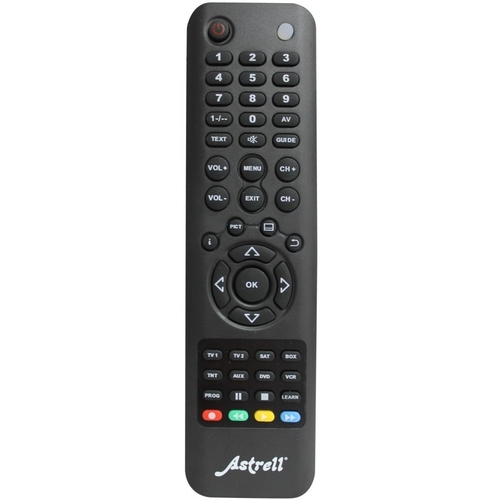
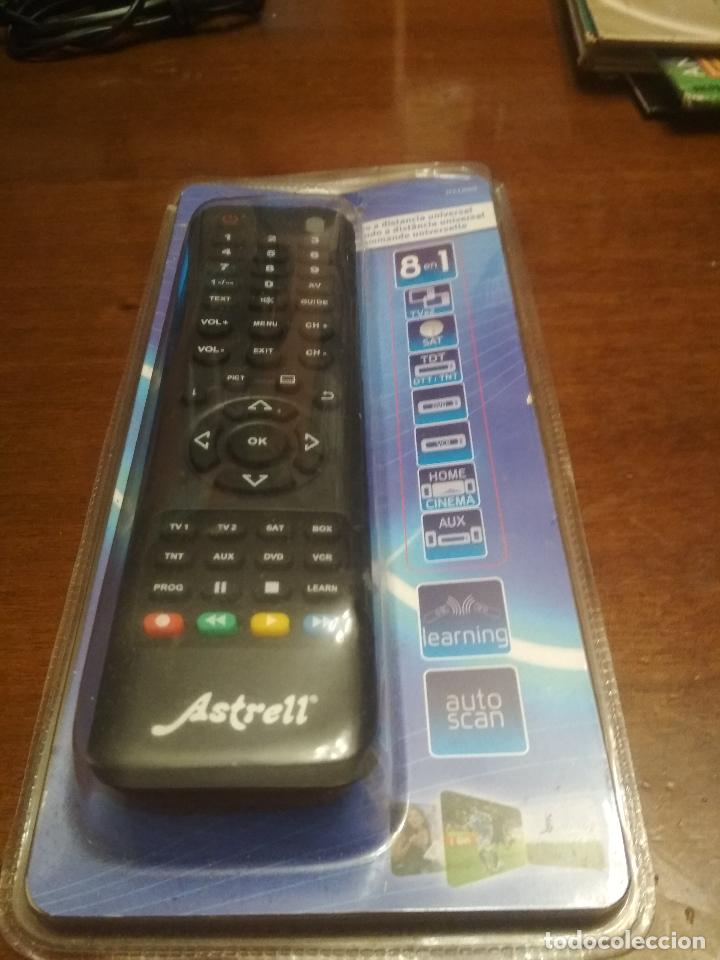
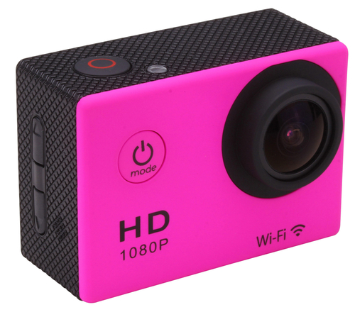
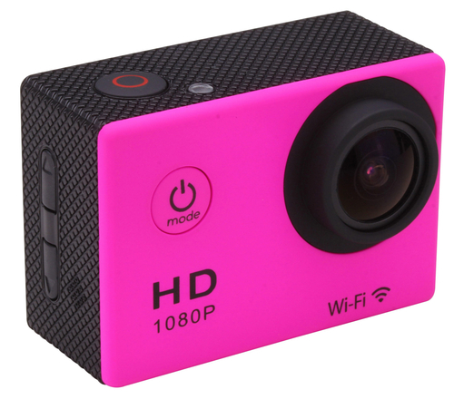
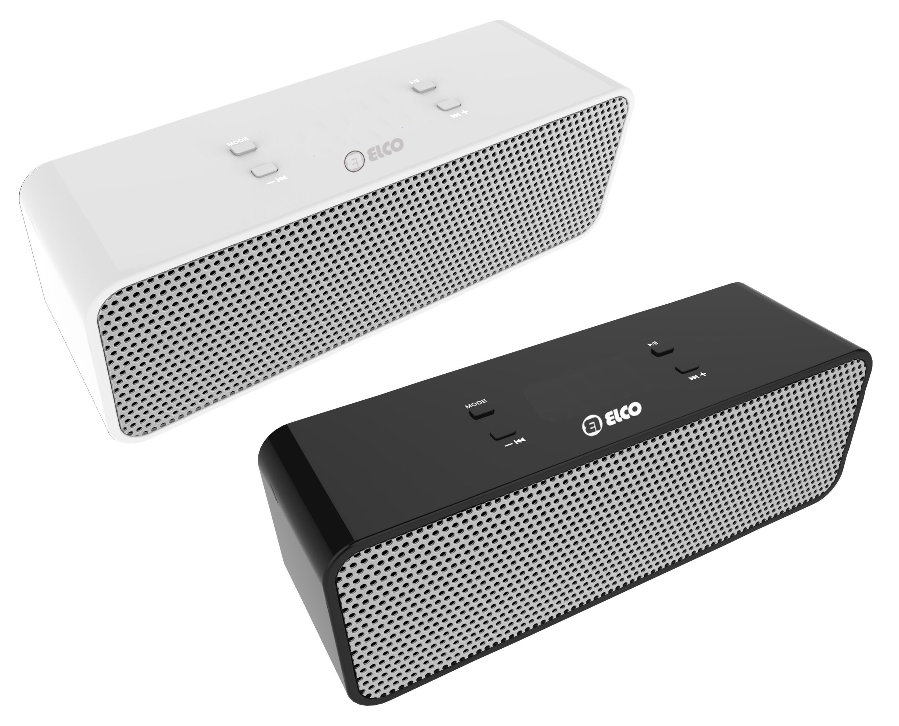
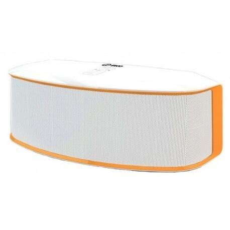

KE ELEKTRÓNIKO
En "Ke Elektróniko" tienda online podrás comprar los productos de electrónica que quieras con los mejores precios de internet en imagen y sonido, o por lo menos aquellos que se encuentran entre los tres disponibles, claro está.
Comprar electrónica online es una forma de ahorrar cuando quieras un capricho o amueblar tu hogar con productos de gama marrón, como televisores a precio low cost o altavoces para escuchar música.
PRODUCTOS ELECTRÓNICOS
Mando Universal de Televisión Metronic Astrell 011995
- Marca: Metronic
- Modelo: Astrell 011995


PRECIO DEL PRODUCTO: 12,90 €.
Descripción del producto
Este mando sustituye, para las funciones básicas, los mandos a distancia de las principales marcas del mercado. Podrás controlar hasta 8 aparatos: TV, TDT, receptor satélite, DVD, reproductor vídeo, home cinema, AUX. Contiene un manual de instrucciones y funciona con 2 pilas 1,5v / AAA (lr3) (no incluidas).
El producto se suministrará con los accesorios y características dadas por el fabricante. Por lo que el contenido de la caja es el siguiente: Mando a distancia y manuel de instrucciones, además del clásico papel de burbujas.
Características del producto
- Color: Negro.
- Dispositivos compatibles: TV, TDT, receptor satélite, DVD, reproductor vídeo, home cinema, AUX.
- Tecnología de conectividad: Infrarrojos.
- Alcance máximo 10 metros.
- Dimensiones del producto (largo x ancho x alto): 5 x 3 x 19 centímetros.
- Tipo de pila: AAA.
Ventajas del producto
- 3 métodos de sincronización código, búsqueda automática o "learning".
- Códigos incluidos en el manual de instrucciones. :D
- Es un dispositivo muy intuitivo y fácil de utilizar.
- Consta de un tamaño acoplable a la mano humana con el objetivo de ser cómodo.
En este enlace le proporcionamos una visión del sitio web del fabricante del producto ¿Que más se puede pedir?: Metronic
FOTOGRAFÍA Y VÍDEO
Cámara deportiva NK AC3056-FDR Rosa 12 MPX 1080P
- Marca: NK
- Modelo: AC3056-FHR
 

PRECIO DEL PRODUCTO: 79,90 €.
Descripción del producto
Esta cámara deportiva AC3056-FDA en rosa es resistente al agua y tiene un objetivo para grabar con un ángulo de 170º a 1080p.
Aquí está a tu disposición el modelo AC3056-FHR de la marca NK, una cámara realmente pequeña y ligera que te acompañará siempre en tus aventuras más trepidantes.
Esquía, corre, salta, mójate... y disfruta grabando en Full HD todas tus aventuras.
Cuenta con lente de 170º gran angular que te permitirá abarcar toda la escena. Y lo más importante, incorpora una pantalla trasera de 1.5 pulgadas para que puedas moverte por el menú fácilmente y ver tus vídeos y fotos al instante.
Características del producto
- Color: Rosa.
- Tipo HD: Full HD.
- Máxima resolución de video: 1920 x 1080 Pixeles.
- Velocidad máxima de cuadro: 60 pps.
- Modo fotografía: Sí
- Sensor: 12 Mega Pixels CMOS-Sensor
- Dimensiones del producto (largo x ancho x alto): 2,98 x 5,92 x 4,1 centímetros.
- Wifi: Sí
Ventajas del producto
- Esta cámara cuenta con una lente de 170º gran angular que te permitirá abarcar toda la escena. Y lo más importante, incorpora una pantalla trasera de 1.5 pulgadas para que puedas moverte por el menú fácilmente y ver tus vídeos y fotos al instante.
- Además, posee la tecnología inalámbrica WiFi para que puedas controlarla a distancia y transferir las imágenes a tu Smartphone al instante, para así subirlas a tus redes sociales.
- Con la cámara se suministran todos los accesorios necesarios para que puedas grabar y hacer fotos en cualquier situación: Carcasa Waterproof, para que puedas sumergirla y grabarte en la piscina, en la playa o mientras practicas surf, Soporte de bicicleta, soporte de clip, soporte de pinza, cinta de sujeción y soportes adhesivos.
En este enlace le proporcionamos una visión del sitio web del fabricante del producto, menudo servicio ¿no?: NK
FOTOGRAFÍA Y VÍDEO
Altavoces portátil Elco PD-1820 Blnaco 3W RadioFM
- Marca: ELCO
- Modelo: PD-1810C


PRECIO DEL PRODUCTO: 29,90 €.
Descripción del producto
Lleva tu música preferida allá donde vayas gracias a este potente altavoz portátil PD-1820C que suministrará 6 vatios. Una perfecta calidad de sonido.
Características del producto
- Color: Blanco.
- Potencia: 6W.
- Función Linea-In: Sí.
- Versión de Bluetooth: 2,1+EDR.
- Dimensiones del producto (largo x ancho x alto): 16,7 x 6,7 x 7,8 centímetros.
- Radio FM: Incorporada
- Ranura: Para Tarjets Micro SD
- Puerto USB: Sí.
Ventajas del producto
- Este altavoz posee función de manos libres, descolgar y llamada.
- Viene con radio FM incorporada, todo para poder escuchar las emisoras que quieras cuando quieras. >:D
- Es un dispositivo muy intuitivo y fácil de utilizar.
- De reducido tamaño para mayor comodidad a la hora de transportar.
En este enlace le proporcionamos una visión del sitio web del fabricante del producto, si es que como aquí en ninguna parte: Elco